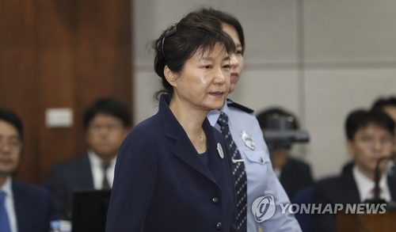

- 2017년 3월 21일
- 2017년 5월 23일
- 2017년 10월 13일
- 2018년 1월 4일
- 2018년 2월 27일
- 2018년 4월 2일
- 2018년 4월 6일
- 2018년 6월 15일
- 2018년 7월 12일
- 2018년 7월 20일

-검찰 피의자 신분 출석, 10일 뒤 구속
“국민들께 송구하다.
검찰에서 성실히 조사 받겠다”

국정농단 첫 재판 출석, 최순실과 대면
재판부 : "피고인도 혐의 부인 입장인가?"
박 前 대통령 : "네. 변호인 입장과 같습니다."

구속기간 연장, 3일 뒤 재판 보이콧
"재판부에 대한 믿음이 더는 의미 없다"
검찰, 특활비 뇌물, 공천 개입 혐의로 추가 기소
최순실 개입 정황 메모도 공개

검찰, 징역 30년/벌금 1185억원 구형
“진지하게 반성하는 모습을
단 한 차례도 보인 적 없다”

박근혜 전 대통령, 재판부에 답변서 제출
“1심 선고, 생중계 원치 않아”
국정농단 1심서 징역 24년 벌금 180억원 선고
김세윤 재판장
“박근혜, 헌법적 책임 방기…
국정질서 큰 혼란”

검찰, 36억 특활비와 공천개입 혐의로
징역 15년 구형
검찰 "반성의 모습 전혀 없어..엄벌해야"
국정원 특수활동비 상납 관여한 혐의로
문고리 3인방 선고
“국고손실은 유죄, 뇌물은 무죄”

박 전 대통령 ‘특활비 뇌물, 공천개입’ 1심 선고
“~~~~~~~~~~~~~~
~~~~~~~~~~~~~~~”(재판부 워딩)